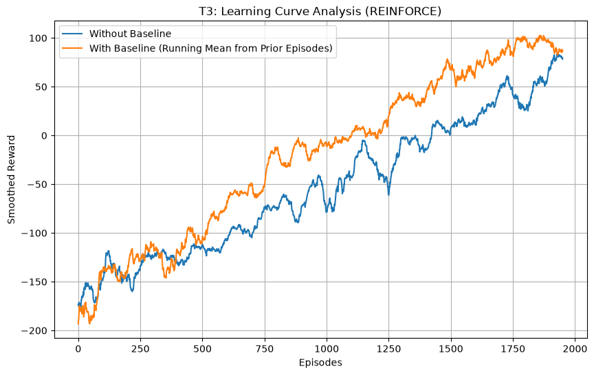
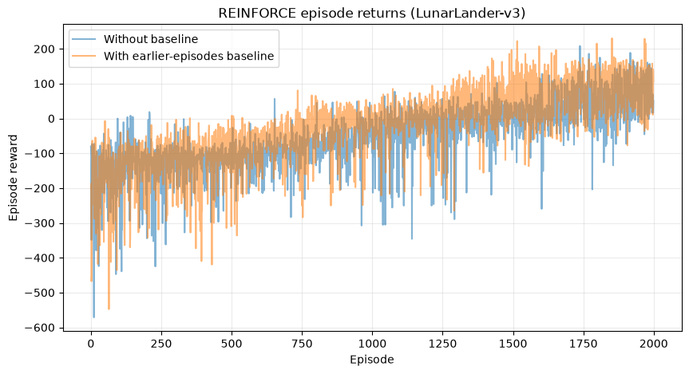
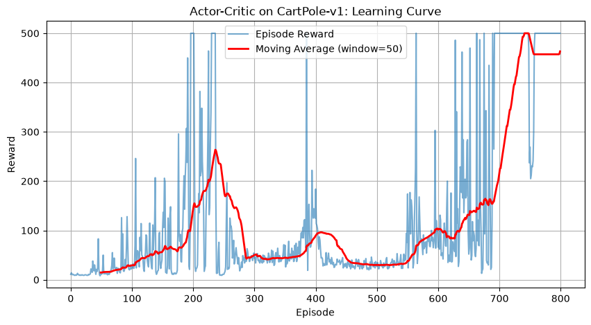
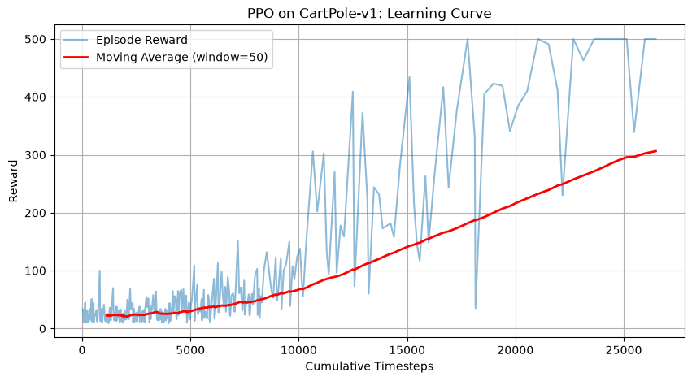
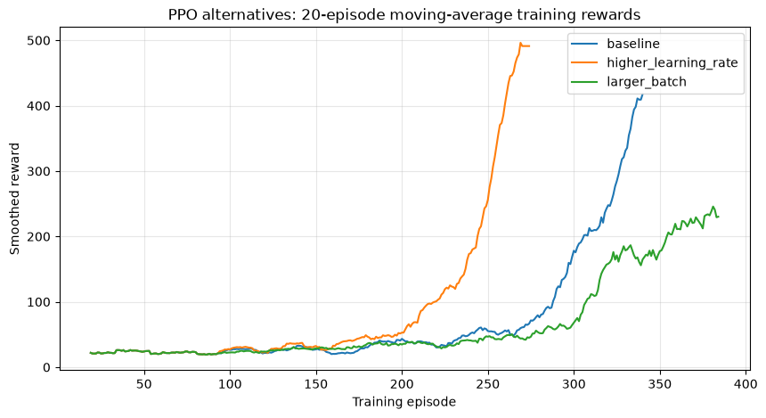

Assignment 2 — Policy Gradient, Actor–Critic and PPO
Advanced Statistical Learning and Modeling · Module A
Student: Omid Shojaeian
Report based on: the three executed Assignment 2 notebooks on GitHub, 12 October 2026.
Source: official Assignment 2, November 2025, pp. 1–3.
Abstract and recorded outcomes
This assignment studies three reinforcement-learning approaches: Monte Carlo REINFORCE, one-step temporal-difference Actor–Critic and Proximal Policy Optimization (PPO). It evaluates a variance-reduction baseline, the distinct roles of the actor and critic, and the effect of two actually trained PPO hyperparameter alternatives. Numerical results below are taken from the last saved notebook execution.
| Method | Environment | Measured outcome |
|---|---|---|
| REINFORCE, without baseline | LunarLander-v3 | Last-100 training mean 74.54 |
| REINFORCE, earlier-episodes running baseline | LunarLander-v3 | Last-100 training mean 91.41 |
| One-step TD Actor–Critic | CartPole-v1 | Last-100 training mean 478.67 at episode 800 |
| PPO, standard setting | CartPole-v1 | Independent evaluation mean 500.00 (30 episodes) |
| PPO, higher learning rate | CartPole-v1 | Independent evaluation mean 500.00 (30 episodes) |
| PPO, larger minibatch | CartPole-v1 | Independent evaluation mean 355.93 (30 episodes) |
1. REINFORCE on LunarLander
T1. Policy network, return and training loop
The REINFORCE notebook builds a stochastic categorical policy over four actions from an eight-dimensional observation. Its MLP is 8 → 128 (ReLU) → 4 (softmax). The algorithm samples trajectories and updates parameters after complete episodes using policy-gradient weights derived from observed discounted returns.
| Hyperparameter | Implemented setting |
|---|---|
| Learning rate | 0.001 (Adam) |
| Episodes | 2,000 for each configuration |
| Discount γ | 0.99 |
| Maximum steps | 1,000 per episode |
| Batch | One complete episode |
| Policy architecture | 8 inputs → 128 hidden → 4 action probabilities |
Environment-version disclosure: The official instructions specify LunarLander-v2. The saved execution actually used LunarLander-v3, because the installed Gymnasium deprecated v2. This compatibility fallback is printed in the notebook. The report describes the actual v3 measurements rather than labeling them v2 results.
T2. Why Monte Carlo? What does the baseline do?
REINFORCE uses realized discounted returns from full episodes and does not bootstrap from estimated state values. A common expression for its update is
∇J(θ) ≈ Σₜ ∇θ log πθ(aₜ|sₜ) [Gₜ − bₜ].
Trajectory returns fluctuate greatly, giving high-variance gradient estimates. A baseline can reduce their variance without changing the expected policy-gradient direction when it is independent of the sampled action. Here the baseline is a running mean of prior episodes' discounted returns, updated only after the current episode's optimizer step; the no-baseline experiment uses unadjusted returns. It is not a learned critic and is not identical to the previously used within-episode return standardization.
T3. Learning curves and observed comparison


| Recorded measurement | Without baseline | With baseline |
|---|---|---|
| Last-100 mean training reward | 74.54 | 91.41 |
| Absolute difference (with minus without) | 16.87 |
The running-baseline configuration had a higher observed final 100-episode training mean in the recorded experiments. However, the two trainings are separate stochastic trajectories, and this result does not prove a statistically significant causal improvement or optimal control. Training means should not be called held-out evaluation scores.
2. One-step TD Actor–Critic on CartPole-v1
T1. Architecture and online update
The shared network takes four CartPole features into a 128-unit ReLU layer, then branches into an actor head producing two action probabilities and a critic head predicting one scalar state value. Its training uses Adam at learning rate 0.002, γ = 0.99, with up to 1,000 episodes and CartPole's 500-step episode cap.
The real one-step temporal-difference target is
yₜ = rₜ + γ V(sₜ₊₁) for nonterminal transitions, or yₜ = rₜ for terminated transitions.
The TD error is δₜ = yₜ − V(sₜ). The actor maximizes the sampled action's log probability weighted by detached δₜ, while the critic minimizes [yₜ − V(sₜ)]². The implementation retains a bootstrap value for a time-limit truncation, unlike a genuine task termination.
T2. Contrast with REINFORCE
REINFORCE waits until the end of an episode and uses Monte Carlo discounted returns; this Actor–Critic implementation performs an online update at every transition, with the critic estimating the next-state value. Bootstrapping changes bias/variance and learning dynamics. Calling a full-episode Monte Carlo return-minus-value estimate a “one-step TD error” would be incorrect; the updated code explicitly computes the one-step target.
T3. Actual learning curve

The last 100 training episodes reached an observed mean of 478.67 at episode 800, when the notebook stopped after its pre-specified 475 last-100 training threshold. This is evidence of good training-phase performance. It is not a separately computed 100-episode held-out greedy evaluation and should not be reported as such. Performance can be sensitive to random seed and learning-rate setting.
3. PPO on CartPole-v1
T1. Policy and hyperparameters
PPO was implemented through Stable-Baselines3, using the `MlpPolicy` default actor/critic MLP (two hidden layers of 64 units), learning rate 0.0003, discount γ 0.99, update rollout n_steps = 2,048, minibatch 64, and requested `total_timesteps = 25,000`. With 2,048-step rollouts, the saved training log ended at 26,624 interaction steps (the last full rollout extends beyond the requested minimum).
T2. Ratio, clipping and entropy
PPO is on-policy: data used for each update must come from the policy collecting those rollouts rather than from an unrestricted replay buffer of old policies.
The likelihood ratio rₜ(θ) = πθ(aₜ|sₜ) / πold(aₜ|sₜ) measures how the action probability changes under the candidate policy. PPO's clipped surrogate uses min[rₜ Aₜ, clip(rₜ,1−ε,1+ε) Aₜ] to limit gains from overly large policy changes. An optional entropy bonus rewards policy uncertainty and can support exploration; the notebook relies on the SB3 implementation rather than reimplementing these components manually.
T3. Learning curves and two tested alternatives


Each configuration was actually trained, not hypothesized, and evaluated greedily on 30 new episodes with the same evaluation seeds.
| Configuration | Learning rate | Batch size | Greedy mean | SD |
|---|---|---|---|---|
| Baseline | 0.0003 | 64 | 500.00 | 0.00 |
| Higher learning rate | 0.0010 | 64 | 500.00 | 0.00 |
| Larger batch | 0.0003 | 128 | 355.93 | 100.24 |
Both the baseline and the tested higher-learning-rate variant achieved mean 500 on the 30 evaluation episodes of the recorded run. The larger-batch variant scored 355.93, with nonzero variability. These are empirical comparisons at one training seed and a capped-reward task; they do not show universal superiority of a particular learning-rate or batch-size choice.
4. Comparative interpretation and limitations
The three methods differ fundamentally in how they estimate improvement signals: REINFORCE weights log-probability gradients by completed-episode returns; Actor–Critic adds a learned value function and one-step TD bootstrap; PPO constrains policy changes by a probability ratio and clipping.
The experiment demonstrates feasible training and meaningful empirical differences, but not multi-seed statistical generalization. The REINFORCE and Actor–Critic figures show training returns, while the PPO table reports fresh held-out deterministic evaluations. Only within those definitions should performance be compared. The official instructor requires the annotated executed notebooks; this report is a supporting explanatory document.
Reproducibility and sources
- Official Assignment 2 (November 2025), pp. 1–3.
- Executed notebooks: `moduleA/Assignment2/04 LAB_A Reinforce.ipynb`, `05 LAB_ A_Actor Critic.ipynb`, and `06 LAB_A PPO.ipynb` from the repository's main branch.
- Figures were extracted directly from these notebooks' recorded `image/png` outputs.